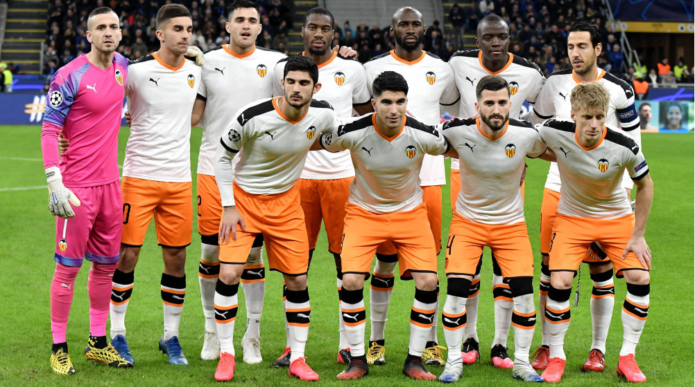
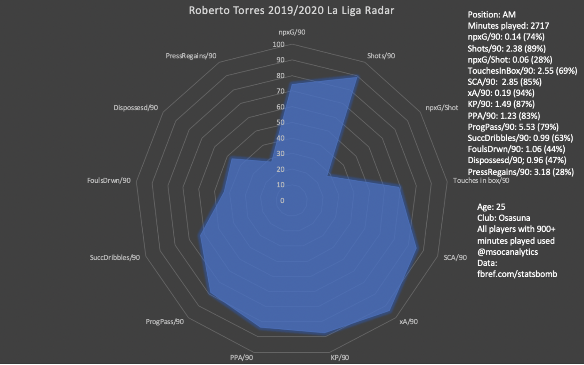
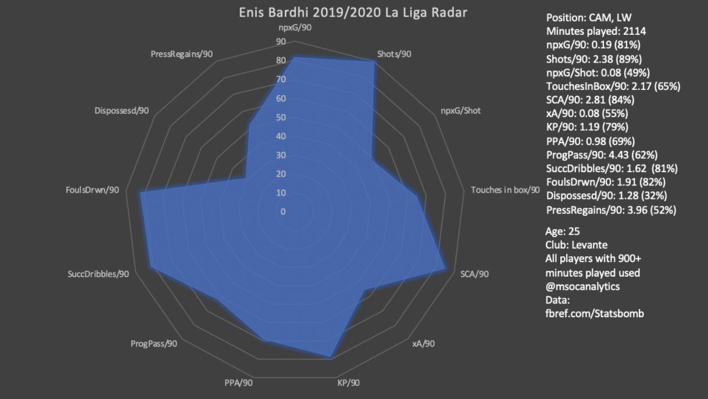
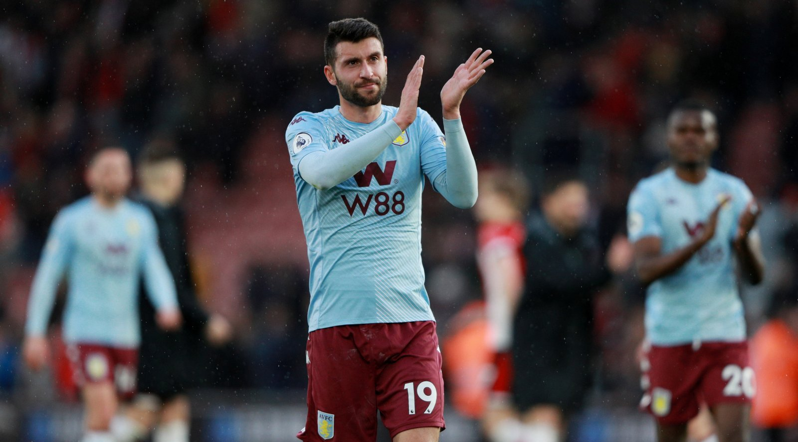
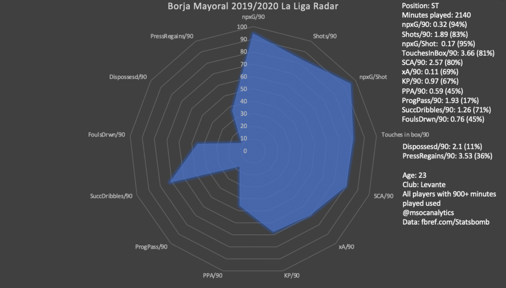
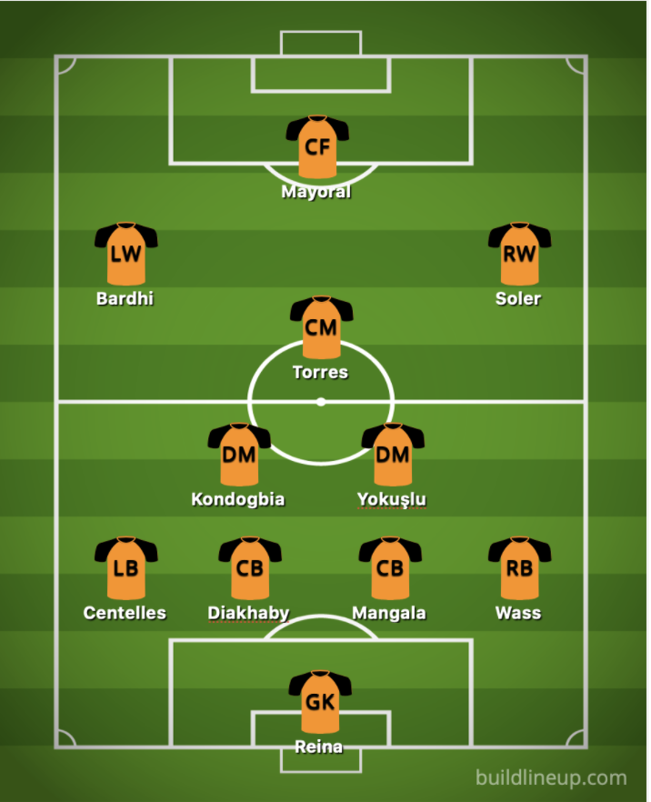

Valencia are in a really tough spot right now. They have been devastated financially by COVID-19, to the point where the club may never recover. Due to these financial hardships, Valencia have had to reduce their total wage bill, meaning that they have had (and will have to) sell some of their best players for lower fees to remove their high wages from the club’s payroll. This is why club captain Dani Parejo was allowed to leave for free to their rival club Villarreal, despite him still being in the prime of his career at 31 years old. It is also why the club is facing an exodus of most of its players, as they do not want to take a wage reduction. Billionaire owner Peter Lim has been accused of being negligent and mismanaging the club after his only response to Valencia’s troubles was a quote in an open letter from Valencia to their fans, saying “a bankrupt club is not a better club.”
Talking about poor club ownership is the perfect segue into this piece. In this article I will be giving my plan on how to minimize the damage COVID-19 has done to Valencia, and how to rebuild the club in the best way possible. The plan I have will not immediately make this club into a team that will compete for a Champions League spot, or even a Europa League place. Heck, the team couldn’t even get a Europa League place this season. Instead, I will be looking to keep the club from relegation in the short term, and build a squad that will compete for European spots in a few years.
Now onto the rules. I will start with a transfer budget of €0, and all players that I sell will have 50% of their fee given to the club (for the current stadium renovations, debts that need to be paid, etc.), and 50% given to me for new transfers. The funds that Valencia have received from the players that they’ve already sold (Parejo, Coquelin, Ferran Torres) will all be given to the club; I will receive no additions to my transfer budget from them. Also, Valencia have also already agreed terms to sign two players in this window, so they will be added to my list of signings. With all of that settled, let’s begin!
The Squad/Manager:

With Dani Parejo, Francis Coquelin, and Ferran Torres sold, and Ezequiel Garay gone on a free transfer, I have some holes in my squad that will need to be filled. Here is what the squad looks like:
Goalkeepers: Jasper Cillessen, Jaume Domenech
Defenders: Gabriel Paulista, Mouctar Diakhaby, Eliaquim Mangala, Hugo Guillamon, Jose Gaya, Alex Centelles, Toni Lato, Daniel Wass, Cristiano Piccini, Thierry Correia
Midfielders: Kang-in Lee, Geoffrey Kondogbia, Carlos Soler, Denis Cherysev, Uros Racic
Forwards: Rodrigo, Goncalo Guedes, Maxi Gomez, Kevin Gameiro, Manu Vallejo, Ruben Sobrino
I really don’t have much faith in Valencia’s newly appointed manager Javi Gracia. He has never impressed me during any of his managerial stints, and I don’t expect much of him at Valencia. He is not the right man to bring in during a rebuild, and I don’t expect him to be at the helm for too long. He typically sets his team up in a 4-4-2 formation, but for my rebuild I favored a 4-3-3. Like I said, this is a long term rebuild, and Gracia is not a long-term manager. Nevertheless, I tried to select players that would fit Gracia’s style of play. The most important aspect that I wanted to nail down was the way Gracia likes his wingers to play: he likes them to cut in often, and almost play as attacking midfielders. I tried to create a system that reflects this tactic, and I believe that I was successful.
Who’s Getting Sold:
I plan on offloading most of the bigger-name players on the squad sheet, to 1) make as much money from their transfers as I can, and 2) get their higher-wage contracts off of the club’s books. I estimated what fee each player would leave for (and which club they went to), using their market value, the current financial climate, and the state of the club.
Jasper Cillessen: Sold to Ajax for €15 million
Cristiano Piccini: Sold to Fiorentina for €5 million
Jose Gaya: Sold to Barcelona for €30 million
Gabriel Paulista: Sold to Villarreal for €15 million
Rodrigo: Sold to Real Betis for €40 million
Goncalo Guedes: Sold to Lyon for €25 million
Maxi Gomez: Sold to West Ham for €30 million
Kevin Gamiero: Sold to Granada for €10
Total made: €170 million
Transfer Budget: €85 million
I’m honestly not worried about selling any of these players. Cillessen had a poor season, conceding 30 goals in 24 La Liga appearances, and Valencia should have sold him this summer regardless of their financial situation. Gaya and Paulista are both great players, and it would be disappointing to lose them, but Valencia has a lot of defensive coverage available to replace them, so it’s not too harmful for the club to sell them. Piccini is injury prone, and like Cillessen, should have been sold anyway. Rodrigo and Guedes managed a combined 6 goals and 11 assists in the 2019/2020 season, a horrible tally for players of their stature. Numbers like that can be replicated easily by players that can be paid much less. Maxi Gomez, even though he was signed last summer, has to be offloaded due to his high wages. Kevin Gamiero must also leave to remove his wages from the payroll.
The Squad Now/What We Need:
Goalkeepers: Jaume Domenech
Defenders: Mouctar Diakhaby, Eliaquim Mangala, Hugo Guillamon, Alex Centelles, Toni Lato, Daniel Wass, Thierry Correia
Midfielders: Kang-in Lee, Geoffrey Kondogbia, Carlos Soler, Denis Cherysev, Uros Racic
Forwards: Manu Vallejo, Ruben Sobrino
First, the team obviously needs another goalkeeper. I trust Jaume to be the starter, but Valencia have already agreed terms with a new goalkeeper, who will be guaranteed to start between the sticks, so I don’t really have a choice here.
Defensively, Valencia are actually quite sound.The team has quite a bit of depth at center back, but another should be brought in just to be safe. I believe that the team doesn’t need to sign a new left back, as Lato and Centelles have both returned from loans and are surely capable of handling the starting left back spot. Daniel Wass will remain the first-choice right back, with Corriea as his backup and understudy.
In midfield, the squad has issues regarding depth. I will be making 2 signings, one defensive midfielder and one attacking midfielder to replace the holes left by Dani Parejo and Francis Coquelin.
Regarding the forwards, the club will need to buy two, a starter and a backup. They will have to be lesser-known, and have a smaller wage bill than those who were forced to leave. I will also buy a left winger to replace Goncalo Guedes.
Roberto Torres from Osasuna for €10 million
Torres has been tremendous for newly-promoted Osasuna this season, scoring 7 goals and assisting 8 in 36 La Liga appearances. The squad needs a creative midfielder to replace club legend Dani Parejo, and Torres ranks in the 94th percentile for expected assists per match and in the 85th percentile for shot-creating actions, so he seems a worthy replacement. He is 31 however, so he doesn’t have too many years of top tier play left, but he should do just fine for a few seasons. His contract with Osasuna ends in 2021, so I believe that Valencia could sign him for very cheap this transfer window.

Enis Bardhi from Levante for €25 million
In my opinion, Bardhi would be a fantastic signing for Los Che. While playing a mix of left winger and attacking midfielder for Levante this season he has racked up 7 goals and 3 assists (a much better tally than Goncalo Guedes’ 2 goals and 2 assists). He also is known for his ability to cut in off the wing and shoot the ball, or to move into the midfield, which fits Javi Gracia’s style. He will not come cheap (and rightfully so), but Bardhi is absolutely worth the price if Valencia are looking for a player to build their team around. He is also only 25, so he is still yet to hit the prime of his career, and he could stay at the club for the long term.

Borja Baston on a free transfer
Baston hasn’t found much success lately during spells at Swansea and Aston Villa, but picking him up on a free transfer seemed like a no-brainer. He’s proven himself in Spain before, enjoying successful stints at Eibar, Real Zaragoza, and Deportivo la Coruna early in his career. He will do just fine as a backup striker, and will be a good presence coming off of the bench late in matches. If it doesn’t work out, it doesn’t affect the club too much as he came in for free.

Borja Mayoral from Real Madrid for €15 million
He’s been good for Levante (on loan from Real Madrid) in the 2019/2020 season, scoring 8 goals with 2 assists in 34 La liga appearances. He’s been linked with Valencia lately, and I believe that this transfer makes sense. He is a great poacher, and if he can be found in the box, he will score. He isn’t known for his speed or dribbling abilities, but his passing and link-up play are above average for a striker of his age. Mayoral has bunches of potential, and with Real Madrid trying to offload their players for lower fees this summer, Valencia should take the chance to sign him on the cheap while they can.

Total spent: €77 million
Final Squad/Starting XI
Goalkeepers: Pepe Reina, Jaume Domenech
Defenders: Mouctar Diakhaby, Eliaquim Mangala, Hugo Guillamon, Diogo Leite, Alex Centelles, Toni Lato, Daniel Wass, Thierry Correia
Midfielders: Kang-in Lee, Geoffrey Kondogbia, Okay Yokuşlu, Roberto Torres, Carlos Soler, Denis Cherysev, Uros Racic, Enis Bardhi
Forwards: Borja Mayoral, Borja Baston, Manu Vallejo, Ruben Sobrino

While this squad may be a drop-off from what Valencia fans are used to, it has a lot of potential. The squad feels complete, there are no holes that need to be filled. If Javi Gracia can get the best out of these players, Valencia could realistically secure a Europa League spot for the 2021/2022 season, and from there build an even more capable squad that could bring Valencia back to their former glory.